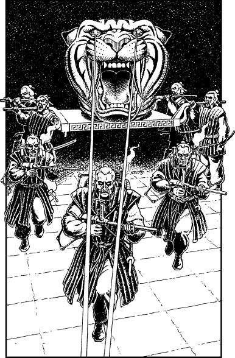
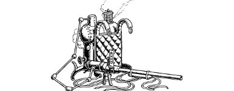

100
The Bakhasian soldiers have undergone a dramatic transformation. Before they entered the temple their skin had the yellowy hue of tallow and their hair was silky black. Now their faces and hands are ghostly white, their hair has turned steely grey, and the pupils of their red-rimmed eyes have changed to a pale translucent amber. The sight of their gaunt faces chills your heart; they look more like animated corpses than living men.
The procession leaves the temple at a funereal pace. At the rear of the column you can see four Bakhasians carrying a platform on their shoulders on which rests an elaborate shrine. It is fashioned from gold and jewels and has been crafted into the likeness of a tiger’s head. Two huge ivory fangs protrude from its jaw and its jewelled eyes glow with a flickering scarlet fire. You notice that the tiger-like shrine resembles the emblem of Sejanoz which is embroidered upon the sleeves of the soldiers’ padded black tunics. As the platform-bearers draw level with the warehouse doorway, the head of the tiger shrine slowly rotates in your direction and two pencil-thin beams of red light shoot from its eyes. You duck back behind the doorway but you know that it is too late—the shrine has detected your presence and it is alerting the cadaverous soldiers to your hiding place. Your Sixth Sense informs you that it is the goodly aura of your Kai Weapon that has activated the shrine and betrayed your position.

When you hear one of the platform-bearers shouting an order, you tell Karvas to get ready to run. You chance a glance around the doorway and your worst fears are confirmed when you see three Bakhasians advancing swiftly towards the warehouse. They are carrying what appear to be hollow, stubby spears that are connected by metallic piping to cylindrical backpacks. One of the advancing soldiers sees you and a puff of bubbling steam gushes from the tip of his spear. In the next instant, a solid projectile smashes through the warehouse wall, leaving a ragged hole in the brickwork less than a hand’s breadth from your head.
{kind=link}

You and Karvas scramble across the rubble-strewn floor towards an open portal on the far side of the derelict warehouse. As you reach this exit, you hear the hiss and thump of another projectile being launched at your fleeing backs.
Pick a number from the Random Number Table. If you possess Grand Huntmastery, add 3 to the number you have picked. If you possess Assimilance, add 2. If your current ENDURANCE score is 20 or higher, add 1.
If your total score is now 0–4, turn to 24.
If it is 5–7, turn to 223.
If it is 8 or higher, turn to 307.